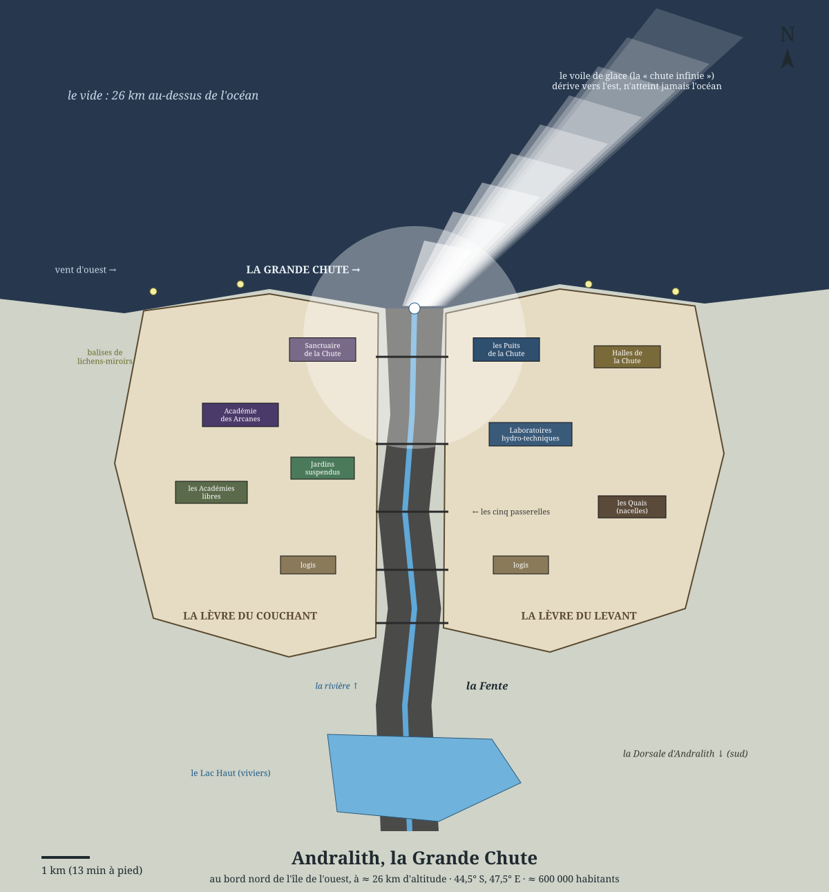

CIV-100 — Andralith, la Grande Chute
Andralith est la capitale scientifique de Maakar, bâtie autour de la Grande Chute, la « chute infinie » qui tombe du bord de l'île de l'ouest et n'atteint jamais l'océan (PLA-009 Maakar, l'archipel et ses îles flottantes § 13). La Tour du Paradoxe gouverne ; Andralith cherche. C'est la ville des Académies, des laboratoires de l'eau et de l'Académie des Arcanes, où l'on forme les mages. Elle compte ≈ 600 000 habitants, la deuxième ville de l'archipel.

1. Le site : la Fente et le bord
- Où : à 44,5° S et 47,5° E, sur le bord nord de l'île de l'ouest, à ≈ 26 km d'altitude. La Dorsale d'Andralith, la colonne de montagnes de l'île, court au sud.
- L'île est fendue en deux. Une faille, la Fente, coupe l'île du sud au nord, large de ≈ 1 km et profonde de plusieurs centaines de mètres. Elle draine ≈ 16 000 km² de l'île, des pentes de la Dorsale jusqu'au bord.
- La rivière de la Fente vient de la neige des météorites de glace, qui forment 88 % de ce qui tombe sur Maakar (SIM-16 Maakar flottant). Elle traverse le Lac Haut, puis court au fond de la Fente et se jette dans le vide au bord de l'île : c'est la Grande Chute.
- Le débit : ≈ 1,05 m de neige et de pluie par an sur le bassin, dont ≈ 45 % repart en vapeur, soit ≈ 290 m³/s. C'est la moitié du Rhône à Lyon, et le huitième du Niagara.
- Pourquoi ici : l'eau, l'énergie et le repère. La Chute se voit de partout, et l'on y règle les routes aériennes de l'ouest.
2. La chute infinie
- L'eau quitte l'île et tombe dans l'air libre, à −50 °C. Elle se brise en gouttes, puis gèle en cristaux qui descendent à 1 à 9 m/s : il leur faut de 1 à 7 heures pour franchir les 26 km, et une bonne part se sublime en route.
- Le vent d'ouest, qui dépasse souvent 100 km/h à cette altitude, couche le voile vers l'est. Vue de la ville, c'est une colonne d'argent qui se change en un long voile blanc penché sous l'archipel. Sous Andralith, il neige en permanence sur l'océan.
- La brume : au bord, la Chute souffle une brume qui ne se lève jamais. Toute la pointe nord de la ville vit dans la fraîcheur et l'humidité.
- Les arcs-en-ciel circulaires. On regarde la brume d'en haut, le soleil dans le dos : l'arc n'est pas coupé par le sol, et l'on voit le cercle entier. Le Sanctuaire de la Chute est bâti pour cette vue.
Les chutes Victoria (Zambie, Zimbabwe) jettent un nuage de bruine visible à plus de 30 km : on les appelle Mosi-oa-Tunya, « la fumée qui gronde ». Par pleine lune, on y voit des arcs-en-ciel lunaires. Vu d'un avion ou d'une falaise, quand le sol ne coupe pas l'arc, un arc-en-ciel est un cercle complet.
3. Le plan
La ville tient les deux lèvres de la Fente, sur ≈ 9 km du bord vers le sud. Les tours se serrent sur ≈ 45 km² : ≈ 13 000 habitants au km², comme dans toutes les villes de Maakar, où l'on vit en hauteur.
| Lieu | Où | Ce que c'est |
|---|---|---|
| la Grande Chute | au bord, au bout de la Fente | le saut dans le vide, toujours dans la brume |
| le Sanctuaire de la Chute | sur la Lèvre du Couchant, au bord | une terrasse sur le vide, le lieu des pèlerins et des cérémonies ; on y regarde l'arc entier |
| les Puits de la Chute | sur la Lèvre du Levant, au bord | la centrale : l'eau descend dans des puits creusés dans le bord de l'île (§ 4) |
| l'Académie des Arcanes | au centre de la Lèvre du Couchant | l'école des mages de Maakar (MAG-003 Les écoles de magie) |
| les Académies libres | au sud-ouest | ouvertes à tous, même aux plus pauvres (CIV-034 Maakar § 3) |
| les Jardins suspendus | au bord de la Fente, côté couchant | les Nénuphars-Suspensifs et les Arbres-Hydrophones, dans la brume |
| les Laboratoires hydro-techniques | au centre de la Lèvre du Levant | l'étude de l'eau, des Hydro-Cristaux et des générateurs |
| les Halles de la Chute | au nord-est | le marché ; les poissons du Lac Haut, le grain venu de Korrun |
| les Quais | au sud-est, loin de la brume | les quais des nacelles et des vaisseaux de fret |
| les cinq passerelles | en travers de la Fente | les ponts de ceux qui ne volent pas |
| le Lac Haut | en amont, au sud | le réservoir de la Chute et ses viviers |
- Les balises : sur le bord, des miroirs de Lichens-Miroirs renvoient le soleil et marquent la ville pour les navires volants, même dans la brume.
- Les Lèvres : la Lèvre du Couchant, à l'ouest, est celle du savoir et du Sanctuaire ; la Lèvre du Levant, à l'est, celle de l'eau, du commerce et des quais.
4. Les Puits de la Chute
L'énergie se prend avant que l'eau ne se disperse (PLA-009 Maakar, l'archipel et ses îles flottantes § 13). On ne la prend donc pas dans le vide, mais dans la roche : près du bord, des puits creusés dans l'épaisseur de l'île (1 à 3 km) font tomber l'eau de ≈ 400 m sur des turbines, puis la rendent au lit de la rivière juste avant le saut.
- La puissance : 290 m³/s sur 400 m, à 90 % de rendement, font ≈ 1 GW. C'est la plus grande source d'électricité de Maakar après le Chaos des météorites.
- Ce qu'elle nourrit : les laboratoires, les lumières de la ville, les égouts et l'eau triée (CIV-017 Les villes et la vie quotidienne § 4), et des lignes d'argent-foudre vers Khalem.
- La Chute ne tarit pas tant que la pluie d'anneau dure (PLA-010 L'Anneau, la Lune Sœur et les Éclats).
On détourne une partie du Niagara dans des tunnels creusés sous la ville, avant les chutes. L'eau descend ≈ 90 m sur les turbines des centrales Robert-Moses et Adam-Beck, qui produisent ensemble ≈ 4 GW. La nuit, on prend jusqu'aux trois quarts du débit : les chutes ne gardent que ce qu'il faut pour le spectacle.
5. La capitale du savoir
- L'Académie des Arcanes forme les mages de Maakar. Le Draelien, la langue de tous les mages du monde, est né à Maakar (CIV-034 Maakar § 2) : les académies de Sera n'en sont que des copies, et Andralith le rappelle à chaque génération.
- La magie d'Andralith est celle de Maakar : l'air de la bulle est riche en Chaos, les mages s'y rechargent sans peine, mais chaque sort y frappe moins fort. On y enseigne les sorts longs, les machines et les piles (PLA-009 Maakar, l'archipel et ses îles flottantes § 11).
- Les débats publics ressemblent à des conférences, et les plus grands se tiennent sur la Lèvre du Couchant, à la vue de la Chute.
- Les pèlerins : la Chute est un repère et un sanctuaire. Des Nyamakalas viennent de tout l'archipel voir l'arc entier, et la fraîcheur des canaux attire « autant de pèlerins que de savants ».
6. La défense
- Pas de rempart : on n'attaque Maakar que par les airs (PLA-009 Maakar, l'archipel et ses îles flottantes § 11). La défense, ce sont les Sentinelles mécaniques de Khalem, à moins d'un jour de vol, et les défenses automatiques des quais.
- Le danger vient du ciel : une ville de Maakar est touchée par une météorite de 10 m tous les ≈ 20 ans (SIM-16 Maakar flottant § 5). Andralith a son guet sur le bord et ses abris dans la roche des Puits.
- Le fer est interdit dans la ville, comme partout à Maakar : il viderait la roche de son Chaos (PLA-009 Maakar, l'archipel et ses îles flottantes § 7).
7. Vivre à Andralith
- L'air vaut ≈ 75 % de celui de la mer, comme à ≈ 2 300 m sur Terre : l'air de haut plateau des Nyamakalas.
- Le climat : humide, dominé par l'eau ; des brumes épaisses autour de la Chute, des arcs-en-ciel multiples, une fraîcheur permanente le long des canaux.
- La table : les poissons des lacs de glace fondue (BIO-011 L'alimentation des peuples), les oiseaux d'élevage, le grain de Korrun.
- Les sons : les Arbres-Hydrophones vibrent au passage de l'eau. On en fait la musique des cérémonies, et des capteurs qui annoncent les crues de la Fente.
8. Se déplacer
Dans la ville : de la Chute aux Quais, ≈ 9 km. En vol, ≈ 15 min ; à pied, par les passerelles, ≈ 2 h. Les enfants, qui ne volent pas avant ≈ 10 ans (BIO-007 Les Nyamakalas), les vieux et les charges prennent les passerelles et les nacelles.
Depuis Andralith, en vol (un Nyamakala fait ≈ 400 km par jour, CIV-019 Les voyages et les transports) ou en nacelle tirée par une équipe (≈ 150 km par jour) :
| Cité | Cap | Distance | En vol | En nacelle tirée |
|---|---|---|---|---|
| Khalem | 80° | 287 km | 0,7 j | 1,9 j |
| Narak | 240° | 299 km | 0,7 j | 2 j |
| Zar-Lith | 41° | 513 km | 1,3 j | 3,4 j |
| Tovra | 66° | 637 km | 1,6 j | 4,2 j |
| la Tour du Paradoxe | 77° | 656 km | 1,6 j | 4,4 j |
| Valderis | 89° | 725 km | 1,8 j | 4,8 j |
| Velkhar | 94° | 1 000 km | 2,5 j | 6,7 j |
| Thryssa | 69° | 1 142 km | 2,9 j | 7,6 j |
| Korrun | 66° | 1 668 km | 4,2 j | 11,1 j |
Liens
CIV-034 Maakar · CIV-045 La Tour du Paradoxe · PLA-009 Maakar, l'archipel et ses îles flottantes · SIM-16 Maakar flottant · BIO-007 Les Nyamakalas · MAG-003 Les écoles de magie · CIV-017 Les villes et la vie quotidienne · CIV-019 Les voyages et les transports · BIO-011 L'alimentation des peuples · calculs et carte : 09 - LABORATOIRE/Simulations/plan_andralith.py